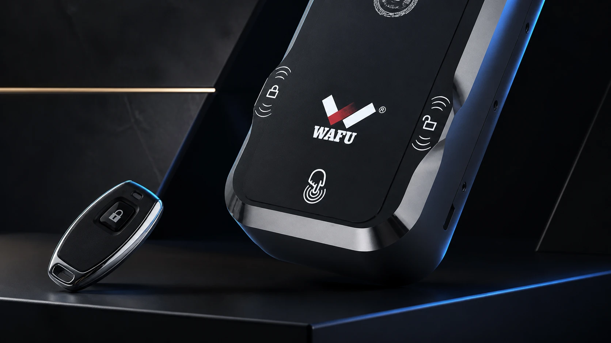
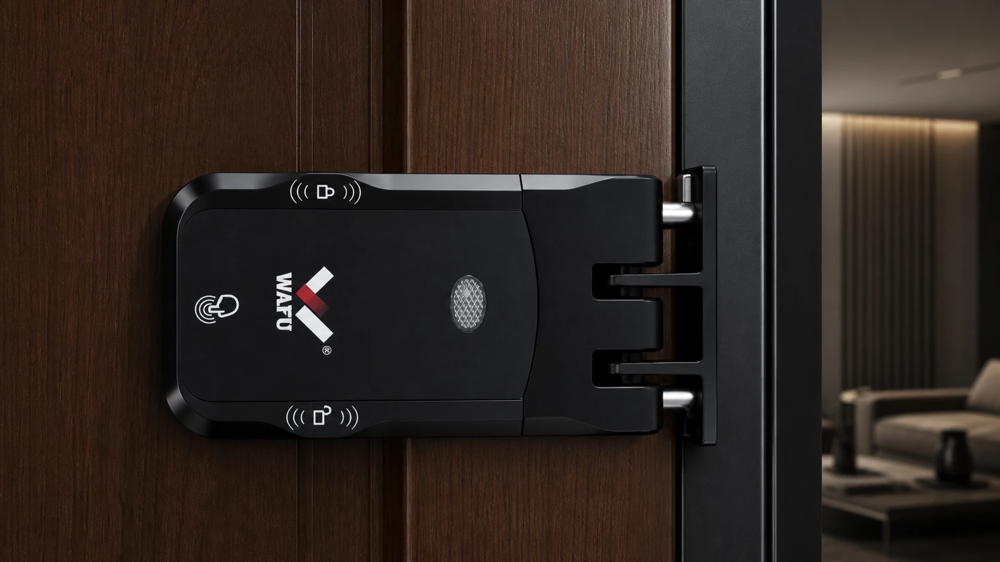

WF-026 deve ser avaliada como uma solução de instalação e manutenção, não como uma lista isolada de funções.
Os projetos que consideram WF-026 procuram normalmente mais do que uma fechadura sem painel visível. Procuram uma configuração que possa ser verificada na porta real, com um percurso de operação definido e manutenção possível quando o projeto cresce. A decisão deve começar pela estrutura da porta e do aro, não por uma imagem de catálogo.

1. Comece pelo problema que o projeto deve resolver
WF-026 pode ser adequada quando o projeto precisa de uma solução invisível com uma lógica de operação e manutenção claramente documentada. Defina primeiro tipo de porta, número de unidades, utilizadores, frequência de acesso, responsável pela instalação e procedimento de incidentes. Não transforme o nome do modelo numa promessa de desempenho sem validar a configuração completa.
2. Verifique porta, aro e percurso de fecho
O corpo é instalado horizontalmente dentro da folha. O recetor fica no aro e recebe os dois pinos do corpo. Verifique espessura, cavidade interna, material, folga, alinhamento, deformação da porta e acesso de serviço. Uma força de fecho excessiva ou um recetor desalinhado pode aumentar o esforço mecânico e prejudicar a experiência de utilização.

3. Sistema duplo e motor duplo: avaliar na operação
Para a equipa de compras, a questão prática é como a configuração se comporta na instalação prevista: que ações estão disponíveis ao utilizador, que indicação recebe o operador, como é registado um incidente e que diagnóstico seguem o instalador e o suporte técnico. Estes percursos devem ser confirmados na amostra e na documentação de entrega.
4. A amostra deve tornar-se um critério de aceitação
Teste a configuração escolhida numa porta representativa e documente montagem do corpo e recetor, operações autorizadas, procedimento de emergência e pontos de inspeção. Use o resultado para criar uma folha de aceitação de lote: modelo, versão, acessórios, posição, folga e responsável pela aprovação.
5. Planeie manutenção, sobressalentes e alterações
Antes de libertar a compra, acorde que peças podem ser substituídas, como a versão é identificada, que evidência é exigida para RMA e quem aprova uma alteração de componente ou firmware. Para projetos com várias portas, organize registos por porta e uma pequena reserva de peças de serviço, em vez de depender de verificações informais.
6. Perguntas antes de escolher WF-026
A porta e o aro suportam a geometria e o acesso de serviço? A amostra confirma fecho sem esforço anormal? Estão definidas as funções de utilizador, o procedimento de emergência e o responsável pela manutenção? Versões, acessórios, sobressalentes e critérios de aceitação estão incluídos na encomenda?
Peça uma avaliação de projeto WF-026
Envie as condições da porta e do aro, quantidade, mercado e fluxo de utilização. A WAFU pode ajudar a preparar a revisão da amostra e os pontos de aceitação.
Perguntas frequentes
WF-026 é adequada para qualquer porta?
Não. A compatibilidade depende da estrutura da folha, do aro, do espaço interno, do alinhamento e da possibilidade de instalar e manter a configuração.
O que deve ser aprovado antes da produção?
A porta de amostra, configuração, acessórios, percursos de operação e emergência, documentos, embalagem e registo de alterações.